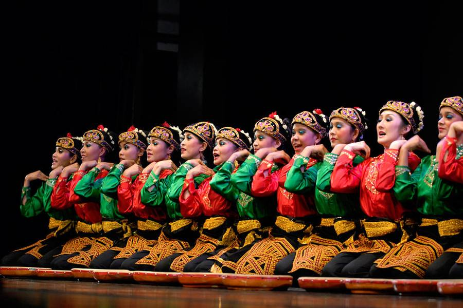
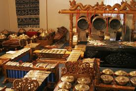

Musik Tradisional

Gamelan merupakan musik tradisional khas Jawa dan Bali yang menggunakan alat musik seperti gong dan kenong.
Budaya Indonesia yang Kaya dan Beragam

Tari Saman berasal dari Aceh dan terkenal dengan gerakan kompak serta irama yang cepat.
Gamelan merupakan musik tradisional khas Jawa dan Bali yang menggunakan alat musik seperti gong dan kenong.

Angklung berasal dari Jawa Barat dan dimainkan dengan cara digoyangkan.

Indonesia memiliki banyak pakaian adat seperti kebaya, ulos, dan baju bodo.

Rendang berasal dari Sumatera Barat dan menjadi salah satu makanan terenak di dunia.